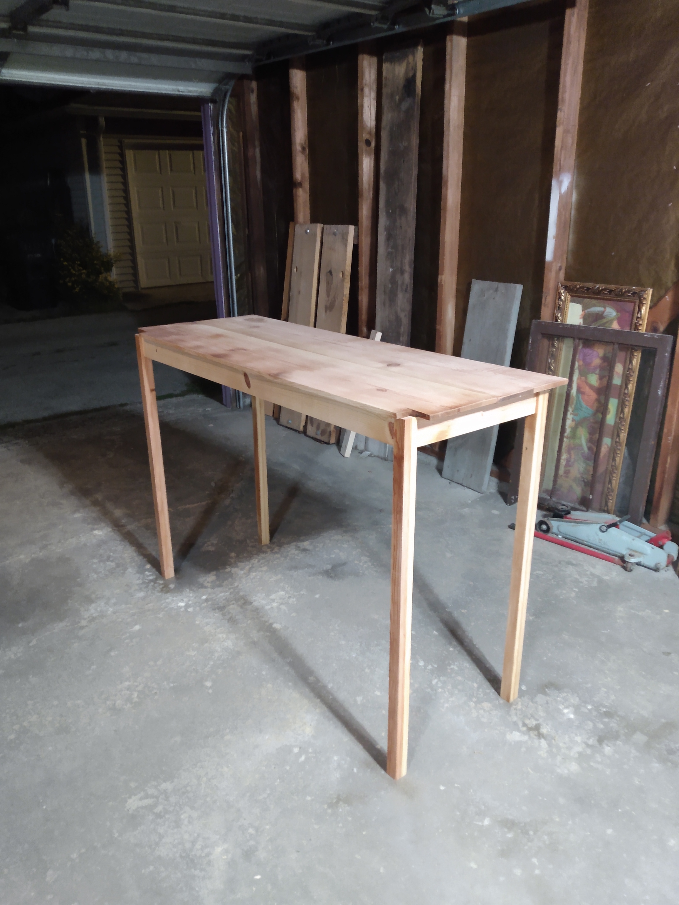
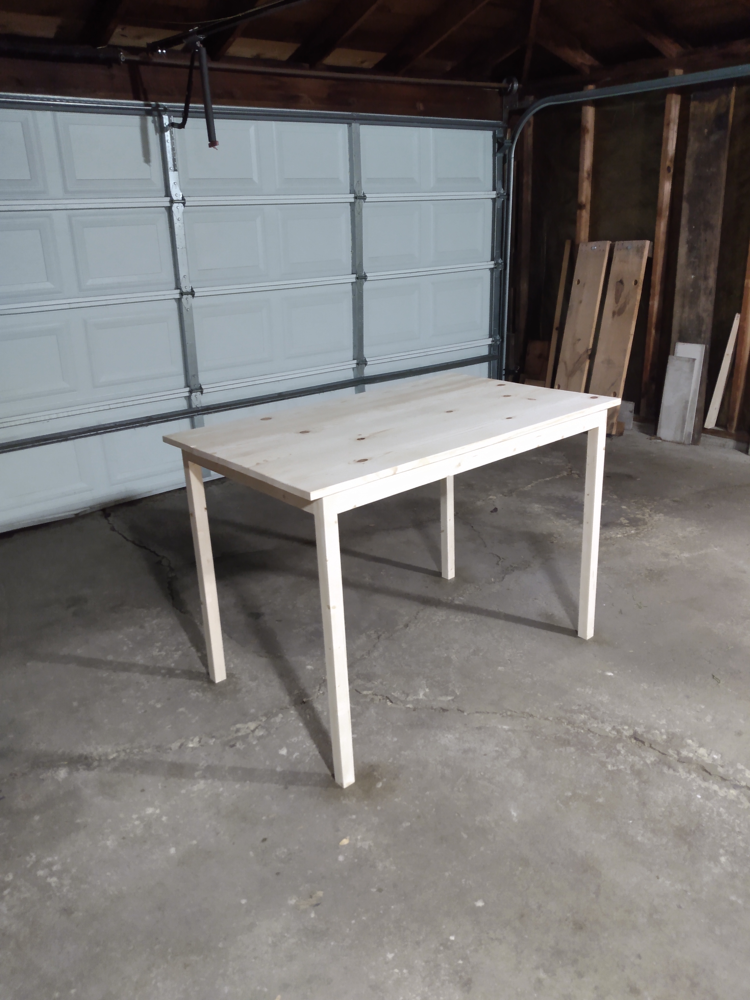

Cool TDD: Uncle Bob Bowling Game Kata.
Favorite makefile tutorial.
Not everything that is faced can be changed, but nothing can be changed until it is faced.
And one of the things I've always found is that, you gotta start with the customer experience and work backwards to the technology. You can't start with the technology and try to figure out where you're gonna try to sell it. And I've made this mistake probably more than anybody else in this room, and I've got the scar tissue to prove it.

